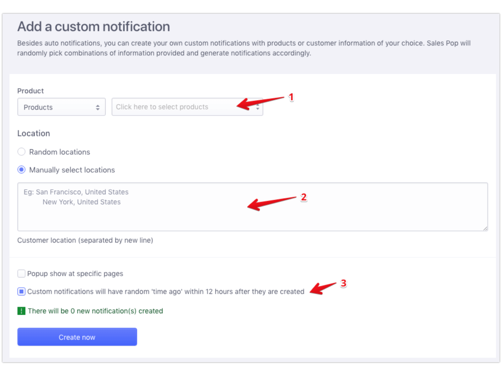

The fake social proof deceptive pattern creates an illusion of popularity and credibility by presenting users with falsified or exaggerated endorsements, such as reviews, testimonials, or activity messages. This manipulation preys on the social proof cognitive bias, in which which individuals are likely to conform to the behaviour of others. It is a shortcut that allows people to avoid the hard work of carrying out a critical evaluation of their own. By using the fake social proof deceptive pattern, providers can trick users into making a purchase or engaging with their offerings.
Beeketing is a marketing automation company that makes software plugins for eCommerce stores. One of their products is called "Sales Pop". It causes an activity message overlay to appear on screen containing claims like “9 customers have bought item x together with item y” or “Alycia in San Francisco just bought item x 4 minutes ago”, as you can see in the first image below. In the Sales Pop documentation, they provide a guide outlining how to use the product to create a convincing fake scarcity deceptive pattern. As you can see in the second image, the store owner can pick a radio button telling the product to generate random locations, and a random "time ago".
|  |
| Home | Dark Patterns | Addictive Design | Resources |